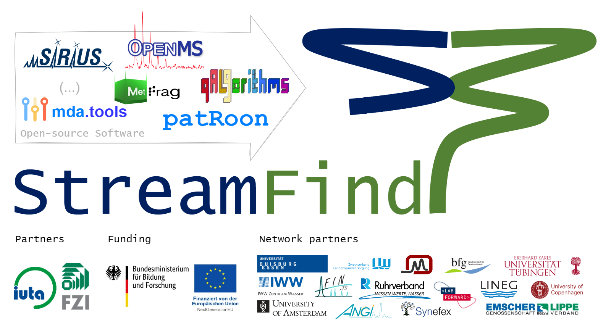

StreamFind R package is developed within the project “Flexible data analysis and workflow designer to identify chemicals in the water cycle” funded by the German Federal Ministry of Education and Research (BMBF). The development is carried out by the Institut für Umwelt & Energie, Technik & Analytik e. V. (IUTA), the Forschungszentrum Informatik (FZI) and supporting partners. StreamFind is intended to be a platform for assembling processing workflows for different types of data (e.g. mass spectrometry (MS) and spectroscopy data) with applications in different fields (e.g. environmental studies of the water cycle and quality control of pharmaceuticals). StreamFind aims to stimulate the use of advanced data analysis (e.g. non-target screening, statistical analysis, etc.) in routine studies, to promote standardization of data structure and processing, and to facilitate retrospective data evaluation. The StreamFind platform is aimed at scientists, but also at technicians due to its comprehensive documentation, its well categorized set of integrated modular processing methods and its embedded graphical user interface.
The StreamFind development is ongoing, please contact us for questions or collaboration.
Installation
Pre-requisites for the StreamFind are the R software and the RTools (only applicable for Windows users). RTools is needed for compiling C++ code used in the StreamFind R package. StreamFind also uses python scripts for some of its processing methods, so it is recommended to have the latest python installed and added to the environmental variables for Windows users. Assuming that R, RTools and python are installed, the StreamFind R package can be installed from the GitHub repository via the BiocManager. Note that StreamFind is not yet available on the Bioconductor repository.
if (!require("BiocManager", quietly = TRUE))
install.packages("BiocManager")
BiocManager::install("odea-project/StreamFind")Other dependencies
The StreamFind depends on other open source software to process different analytic data. For instance, for non-target screening using mass spectrometry the StreamFind uses the patRoon R package and its own dependencies for some processing methods. When a dependency is not installed, a warning message will be displayed with instructions. Consult the documentation of each processing method for dependencies.
Suplementary data
The supplementary StreamFindData R package holds the data used in examples and other documentation assets of the StreamFind and can also be installed from the GitHub repository.
if (!require("BiocManager", quietly = TRUE))
install.packages("BiocManager")
BiocManager::install("odea-project/StreamFindData")Docker Setup
The StreamFind can also be used via the Docker container. The Docker container is a pre-configured environment with all the necessary dependencies installed. The Docker container can be built and started with the following commands.
Build the Docker container:docker build -t my-r-app .
Start the Docker container:docker run -it -p 3838:3838 -p 8787:8787 -v $(pwd):/app my-r-app
Once the container is up, you’ll be prompted to select the service you want to run:
- Option 1: Starts the Shiny application, accessible at http://localhost:3838.
-
Option 2: Starts the RStudio Server, accessible at http://localhost:8787
- Default Username is rstudio and Password is rstudio
- Option 3: Starts both the Shiny App and RStudio Server
Documentation
The documentation and usage examples of the StreamFind R package can be found in the reference page and articles of the webpage, respectively. Note that documentation and articles are under development so not all are yet available.
References
The StreamFind is open source due to public funding and the extensive contribution from scientific literature as well as existing open source software. Below, we reference the research and software that is used within StreamFind. Please note that each open source software or research that StreamFind uses relies on other contributions. Therefore, we recommend to search within each citation for other contributions.